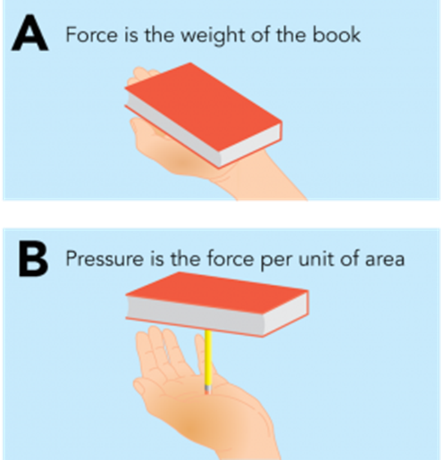
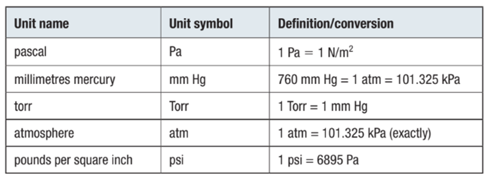
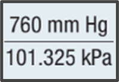
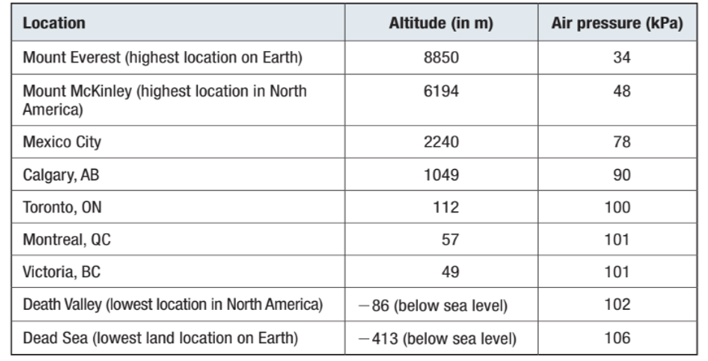

Pressure
|
Mathematically, pressure, P, is expressed as P = F/A

Callout
- The SI unit for pressure is the Pascal (1 Pa = 1 N/m2)
- Pressure is directly related to the size of the force applied.
- The greater the force, the greater the pressure.
- Pressure is inversely related to area.
- A large force applied to a small area will produce a large pressure. If the same force is applied to a large area, the pressure will be less.
Measuring Atmospheric Pressure
Atmospheric Pressure
Standard Pressure = 101.325 kPa
(often rounded to 101 kPa)
|
Standard Temperature and Pressure (STP) |
0 °C | 101.325 kPa |
| Standard Ambient Temperature and Pressure (SATP) | 25 °C | 100 kPa |
Table 1. SI and Non-SI Units of Pressure

Converting Between Units of Pressure
Callout
Sample Problem: Converting from kPa to mm Hg
The average atmospheric pressure on Mars is 0.60 kPa. What is this value in mm Hg?
Identify the given value(s): P = 0.60 kPa
Identify the required value(s): pressure in mm Hg
Step 1: Find the relationship between kPa and mm Hg (Use Table 1) 760 mm Hg = 101.325 kPa
Step 2: Write the relationship as a fraction, of the unit you want to find as the numerator.

Callout
Step 3: Multiply the given value by the conversion factor developed in Step 2.

The density of gases in the atmosphere changes with altitude, decreasing as altitude increases. Greater gas density means more collisions per unit area and, therefore, higher pressure at Earth’s surface. Like air density, atmospheric pressure decreases as altitude increases.

Table 2. Typical Air Pressure at Various Altitudes above Sea Level